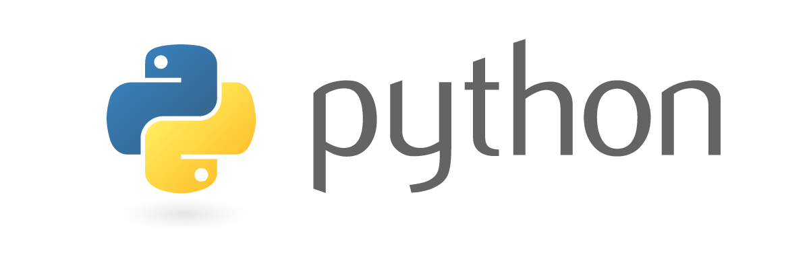
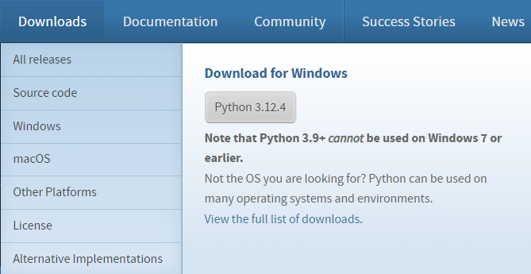
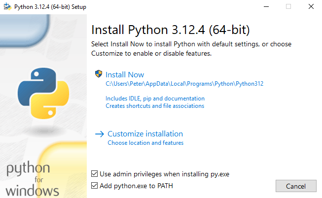
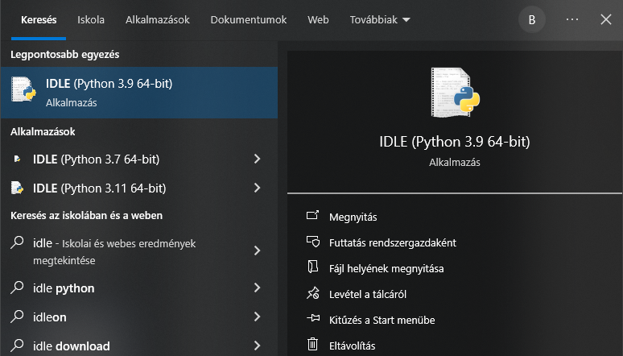
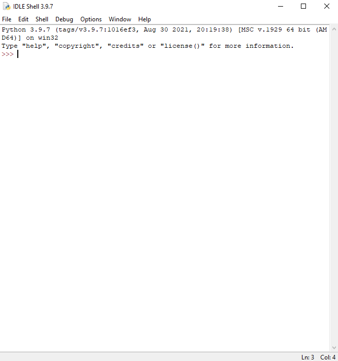
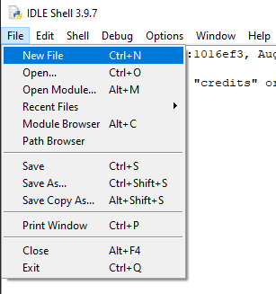
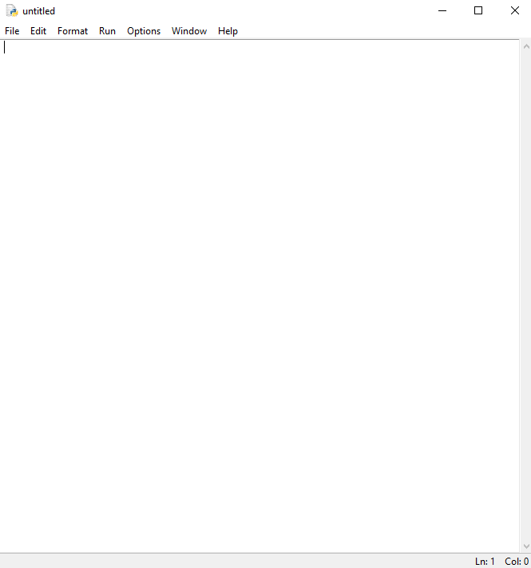

Mit lehet alapból tudni a Python programozási nyelvről?

A Python egy általános célú, nagyon magas szintű
programozási nyelv, melyet Guido van Rossum
holland programozó kezdett el fejleszteni 1989
végén, majd hozott nyilvánosságra 1991-ben.
A nyelv tervezési filozófiája az olvashatóságot
és a programozói munka megkönnyítését helyezi
előtérbe a futási sebességgel szemben.
Például a behúzások szintaktikailag is fontosak.
A Python többek között a funkcionális, az
objektumorientált, az aspektusorientált az
imperatív és a procedurális programozási
paradigmákat támogatja.
Dinamikus típusokat és automatikus
memóriakezelést használ, emellett szigorú
típusrendszerrel rendelkezik.
A Python úgynevezett interpreteres nyelv, ami
azt jelenti, hogy nincs különválasztva a forrás-
és tárgykód, a megírt program máris futtatható,
ha rendelkezünk a Python értelmezővel.
A Python értelmezőt számos géptípusra és
operációs rendszerre elkészítették, továbbá
számtalan kiegészítő könyvtár készült hozzá, így
rendkívül széles körben használhatóvá vált.
A Python, a világ egyik legnépszerűbb
programozási nyelve, a Netflix ajánlási
algoritmusától az önvezető autókat vezérlő
szoftverig mindent megalkotott.
A Python egy általános célú nyelv, ami azt
jelenti, hogy számos alkalmazásban használható,
beleértve az adattudományt, a szoftver- és
webfejlesztést a szerver oldalon, az
automatizálást.
A Python új sorokat használ a parancs
befejezéséhez, ellentétben más programozási
nyelvekkel, amelyek gyakran pontosvesszőt vagy
zárójelet használnak.
A Python a behúzásra támaszkodik, szóközt
használva a hatókör meghatározásához; mint
például a hurkok, függvények és osztályok
hatóköre. Más programozási nyelvek gyakran
használnak zárójeleket erre a célra.
A PYTHON ÁLLOMÁNYOKAT .PY KITERJESZTÉSSEL
MENTJÜK EL!
Számos számítógépen, főleg a MacOs-es gépeken
alapból telepítve van a Python.
Windows-os gépeken először ezt ellenőrizni kell.
Ehhez nyissuk meg a parancssort és gépeljük be a
következőt, bármelyik jó:
Ha nincs akkor töltsük le a Forrásoknál megadott
címről.

Jelöljünk be mindent és telepítsük.

A Python-nal együtt feltelepült a Python IDLE
szerkesztő környezet. Ebben már komolyabb
szkripteket is meg tudunk írni.

Az IDLE alkalmazásra kattintva megnyílik egy
parancsértelmező ablak.

A File New File menüpontra egy olyan
szerkesztőablakot, felületet kapunk, ahol már
nem csak soronként tudjuk megadni a
programunkat, hanem nagyobb kódmennyiséget is
tudunk szerkeszteni.


Mentsük el a programot. Majd kattintsunk a Run
menüpontra és azon belül az Run Module pontra,
vagy csak nyomjuk meg az F5 gombot. A futás
eredménye a következő. Hasznos lehet, ha a két
ablak egymás mellé van rakva a képernyőn!